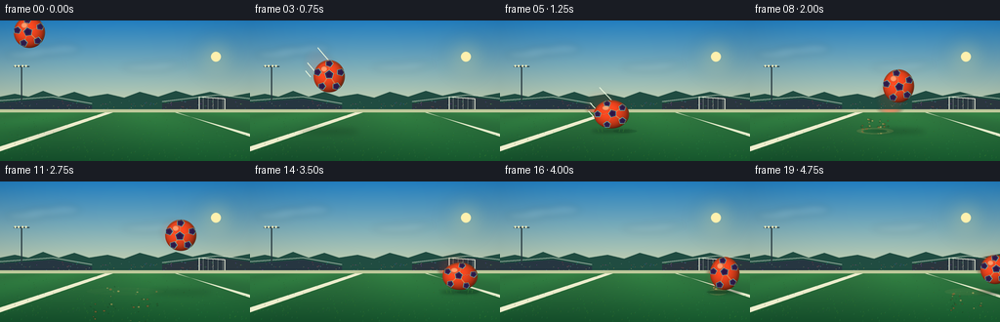
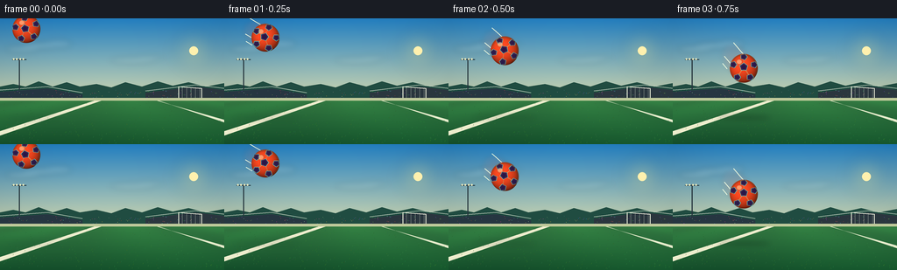

CODING AGENTS AS PIXEL WORLD MODELS
traex/GPT-5.6-Sol · phygen_029
点击播放 · 原生 RGB 像素
逐轮保存的候选
回放视频、检查图与代码变化。
每份候选均可单独播放。实际图片检查记录在下方工具轨迹中。
候选 01播放与检查图
点击播放 · 原生 RGB 像素


展开代码变化
--- 上一保存版本
+++ 本次保存版本
@@ -0,0 +1,281 @@
+from pathlib import Path
+import math
+import numpy as np
+from PIL import Image, ImageDraw, ImageFilter, ImageChops
+import artifact_io
+
+# Procedural, deterministic low-angle sports-film shot.
+W, H, N, SCALE = 256, 144, 20, 4
+SW, SH = W * SCALE, H * SCALE
+rng = np.random.default_rng(2901)
+
+def sc(v):
+ return int(round(v * SCALE))
+
+def pts(seq, dx=0, dy=0):
+ return [(sc(x + dx), sc(y + dy)) for x, y in seq]
+
+def regular_poly(cx, cy, radius, sides, rotation):
+ return [(cx + radius * math.cos(rotation + 2*math.pi*k/sides),
+ cy + radius * math.sin(rotation + 2*math.pi*k/sides)) for k in range(sides)]
+
+# Fixed background details, to avoid temporal texture flicker.
+turf_marks = [(float(rng.uniform(0, W)), float(rng.uniform(94, H)),
+ int(rng.integers(25, 70)), int(rng.integers(80, 145)), int(rng.integers(30, 75)))
+ for _ in range(380)]
+crowd = [(float(rng.uniform(0, W)), float(rng.uniform(82, 94)),
+ tuple(int(x) for x in rng.choice([55, 78, 105, 132, 165, 204], 3))) for _ in range(150)]
+
+# Dirt/grass particles from the two impacts.
+def make_particles(count, seed, strength):
+ rr = np.random.default_rng(seed)
+ out = []
+ for _ in range(count):
+ side = rr.choice([-1.0, 1.0])
+ vx = side * rr.uniform(1.1, 7.0) * strength
+ vy = -rr.uniform(2.0, 9.5) * strength
+ size = rr.uniform(.45, 1.35)
+ kind = int(rr.integers(0, 3))
+ out.append((vx, vy, size, kind))
+ return out
+particles1 = make_particles(42, 711, 1.0)
+particles2 = make_particles(24, 913, .68)
+
+def background(frame):
+ # Sky: clean cyan-to-warm horizon gradient with a slight cinematic vignette.
+ yy = np.arange(SH, dtype=np.float32)[:, None]
+ xx = np.arange(SW, dtype=np.float32)[None, :]
+ t = np.clip(yy / sc(99), 0, 1)
+ top = np.array([35, 129, 196], np.float32)
+ bottom = np.array([222, 222, 174], np.float32)
+ sky = top[None,None,:]*(1-t[:,:,None]) + bottom[None,None,:]*t[:,:,None]
+ sky = np.repeat(sky, SW, axis=1)
+ vign = 1.0 - .12 * (((xx-SW*.5)/(SW*.72))**2 + ((yy-SH*.45)/(SH*.95))**2)
+ sky *= np.clip(vign[:,:,None], .77, 1.02)
+ arr = np.clip(sky, 0, 255).astype(np.uint8)
+ im = Image.fromarray(arr, 'RGB').convert('RGBA')
+
+ # Warm low sun and soft clouds.
+ glow = Image.new('RGBA', (SW, SH), (0,0,0,0))
+ gd = ImageDraw.Draw(glow)
+ sunx, suny = sc(221), sc(37)
+ for r, a in [(25,9), (18,14), (12,24), (6,75)]:
+ gd.ellipse((sunx-sc(r), suny-sc(r), sunx+sc(r), suny+sc(r)), fill=(255,224,117,a))
+ glow = glow.filter(ImageFilter.GaussianBlur(sc(7)))
+ im.alpha_composite(glow)
+ d = ImageDraw.Draw(im, 'RGBA')
+ d.ellipse((sc(216),sc(32),sc(226),sc(42)), fill=(255,240,174,205))
+
+ cloud = Image.new('RGBA',(SW,SH),(0,0,0,0)); cd=ImageDraw.Draw(cloud,'RGBA')
+ for cx,cy,rx,ry,a in [(49,31,23,4,33),(66,29,16,5,25),(25,35,19,4,27),
+ (151,48,25,4,24),(170,45,16,3,20)]:
+ cd.ellipse((sc(cx-rx),sc(cy-ry),sc(cx+rx),sc(cy+ry)), fill=(245,250,235,a))
+ cloud=cloud.filter(ImageFilter.GaussianBlur(sc(3.2))); im.alpha_composite(cloud)
+ d=ImageDraw.Draw(im,'RGBA')
+
+ # Distant tree belt and stadium seating.
+ d.polygon(pts([(0,78),(15,75),(29,78),(44,72),(60,78),(76,73),(91,78),(110,75),
+ (127,79),(143,73),(162,78),(180,72),(197,77),(215,73),(235,78),(256,74),(256,97),(0,97)]),
+ fill=(32,76,65,255))
+ # Stadium banks.
+ d.polygon(pts([(0,84),(54,80),(94,87),(94,96),(0,96)]), fill=(38,54,65,255))
+ d.polygon(pts([(166,85),(223,78),(256,82),(256,97),(166,96)]), fill=(42,54,62,255))
+ d.line(pts([(0,82),(54,78),(94,85)]), fill=(215,225,207,155), width=sc(.7))
+ d.line(pts([(166,83),(223,76),(256,80)]), fill=(215,225,207,150), width=sc(.7))
+ for x,y,c in crowd:
+ d.ellipse((sc(x)-1,sc(y)-1,sc(x)+1,sc(y)+1), fill=(*c,150))
+
+ # Floodlight silhouette and tiny far goal establish a football pitch.
+ d.line(pts([(22,82),(22,46)]), fill=(38,54,61,230), width=sc(1.2))
+ d.line(pts([(14,47),(30,47)]), fill=(38,54,61,230), width=sc(1.1))
+ for lx in [15.5,19,23,26.5]:
+ d.ellipse((sc(lx-1),sc(45.5),sc(lx+1),sc(47.5)), fill=(244,237,190,210))
+ # Goal at the horizon.
+ d.line(pts([(204,92),(204,78),(230,80),(230,94)]), fill=(232,236,215,190), width=sc(1))
+ d.line(pts([(204,78),(230,80)]), fill=(238,240,222,190), width=sc(1))
+ for gx in range(208,231,5):
+ d.line(pts([(gx,79),(gx,94)]), fill=(220,230,212,65), width=sc(.35))
+
+ # Pitch base.
+ field = Image.new('RGBA',(SW,SH),(0,0,0,0)); fa=np.zeros((SH,SW,4),np.uint8)
+ y0=sc(91)
+ gy=np.arange(SH-y0,dtype=np.float32)[:,None]/max(1,SH-y0-1)
+ c0=np.array([52,122,66],np.float32); c1=np.array([20,77,42],np.float32)
+ fc=c0[None,None,:]*(1-gy[:,:,None])+c1[None,None,:]*gy[:,:,None]
+ fc=np.repeat(fc,SW,axis=1)
+ # broad mowing stripes converging toward horizon
+ worldx=(np.arange(SW)[None,:]-SW/2)/(1.0+gy*5.2)
+ stripe=(np.sin(worldx/38.0)+1)*5
+ fc=np.clip(fc+stripe[:,:,None]*np.array([.22,1,.32]),0,255)
+ fa[y0:,:,:3]=fc.astype(np.uint8); fa[y0:,:,3]=255
+ field=Image.fromarray(fa,'RGBA'); im.alpha_composite(field)
+ d=ImageDraw.Draw(im,'RGBA')
+ # Perspective field markings.
+ d.polygon(pts([(0,129),(0,134),(116,94),(111,93)]), fill=(237,237,205,190))
+ d.polygon(pts([(256,116),(256,119),(178,93),(175,93)]), fill=(228,235,202,105))
+ # Fine turf glints and blades, stronger in foreground.
+ for x,y,r,g,b in turf_marks:
+ alpha=int(35+95*(y-94)/(H-94))
+ length=.25+1.1*(y-94)/(H-94)
+ d.line(pts([(x,y),(x+.35,y-length)]), fill=(r,g,b,alpha), width=max(1,sc(.32)))
+ # thin haze over horizon
+ d.rectangle((0,sc(91),SW,sc(94)), fill=(190,201,154,18))
+ return im
+
+positions = [(30,12),(47,22),(64,37),(81,57),(98,79),(114,96),(128,103),
+ (140,88),(152,67),(164,55),(175,51),(185,55),(195,65),(205,81),
+ (215,97),(223,103),(230,94),(237,85),(244,84),(251,90)]
+# horizontal/vertical radii emphasize elastic deformation at contact and stretch on release.
+radii = [(16,16),(16,16),(16,16.5),(16,16.5),(16,16.5),(18,14.5),(23,10),
+ (15,19),(16,17),(16,16),(16,16),(16,16),(16,16),(16.5,16),
+ (18,14),(20,10),(15,17),(15,16),(15,15),(15,15)]
+angles = [-0.15 + i*0.47 for i in range(N)]
+
+def add_shadow(im, cx, cy, rx, ry):
+ ground=113.3
+ altitude=max(0.0, ground-(cy+ry))
+ width=rx*(1.08+min(1.35, altitude/48))
+ height=2.0+min(3.2, altitude/22)
+ alpha=int(max(28, 120-altitude*1.45))
+ sh=Image.new('RGBA',(SW,SH),(0,0,0,0)); sd=ImageDraw.Draw(sh,'RGBA')
+ sd.ellipse((sc(cx-width),sc(ground-height/2),sc(cx+width),sc(ground+height/2)),fill=(7,28,20,alpha))
+ sh=sh.filter(ImageFilter.GaussianBlur(sc(1.6+altitude/32)))
+ im.alpha_composite(sh)
+
+def add_motion_trail(im, i):
+ if i == 0: return
+ cx,cy=positions[i]; px,py=positions[i-1]
+ dx,dy=cx-px,cy-py
+ # Three restrained, blurred afterimages communicate a forceful throw without hiding the ball.
+ tr=Image.new('RGBA',(SW,SH),(0,0,0,0)); td=ImageDraw.Draw(tr,'RGBA')
+ rx,ry=radii[i]
+ for k,a in [(0.72,12),(0.46,20),(0.24,28)]:
+ x=cx-dx*k; y=cy-dy*k
+ td.ellipse((sc(x-rx*.85),sc(y-ry*.85),sc(x+rx*.85),sc(y+ry*.85)),
+ fill=(255,76,42,a))
+ tr=tr.filter(ImageFilter.GaussianBlur(sc(2.2)))
+ im.alpha_composite(tr)
+ # Air streaks only during the hard downward flight.
+ if i <= 6:
+ d=ImageDraw.Draw(im,'RGBA')
+ norm=max(1,math.hypot(dx,dy)); ux,uy=dx/norm,dy/norm
+ for off,ln,a in [(-10,18,45),(8,13,36),(15,8,25)]:
+ # offset perpendicular to travel
+ sx=cx-dx*.45-uy*off; sy=cy-dy*.45+ux*off
+ d.line(pts([(sx-ux*ln,sy-uy*ln),(sx,sy)]), fill=(236,248,222,a), width=sc(.7))
+
+def impact_effect(im, frame, impact_frame, x0, particle_set, strength=1.0):
+ age=frame-impact_frame
+ if age < -1 or age > 5: return
+ ground=113.2
+ layer=Image.new('RGBA',(SW,SH),(0,0,0,0)); d=ImageDraw.Draw(layer,'RGBA')
+ if age >= 0:
+ # low dust skirt spreading along the surface
+ spread=5+age*7*strength
+ alpha=max(0,int(72-age*13))
+ d.ellipse((sc(x0-spread),sc(ground-2.7-age*.4),sc(x0+spread),sc(ground+3.2)),
+ fill=(196,163,98,alpha))
+ # a faint expanding contact ripple/depression
+ d.arc((sc(x0-7-age*4),sc(ground-1.5),sc(x0+7+age*4),sc(ground+5)),
+ 190,350,fill=(185,218,139,max(0,105-age*21)),width=sc(.75))
+ for vx,vy,size,kind in particle_set:
+ # Fractional deterministic offsets give a naturally distributed spray.
+ tt=age + .16*(abs(vx)%1)
+ xx=x0+vx*tt
+ yy=ground+vy*tt+1.65*tt*tt
+ if yy > H+2: continue
+ col=[(62,105,45,205),(136,102,53,210),(211,185,105,175)][kind]
+ if kind==0:
+ d.line(pts([(xx,yy),(xx-vx*.20,yy-vy*.12)]),fill=col,width=max(1,sc(size*.55)))
+ else:
+ d.ellipse((sc(xx-size),sc(yy-size*.65),sc(xx+size),sc(yy+size*.65)),fill=col)
+ # pressed turf/contact patch begins a frame before maximum squash
+ if -1 <= age <= 2:
+ a=[55,130,75,35][age+1]
+ d.ellipse((sc(x0-(10+2*strength)),sc(111.5),sc(x0+(10+2*strength)),sc(115.0)),fill=(11,48,28,a))
+ layer=layer.filter(ImageFilter.GaussianBlur(sc(.28)))
+ im.alpha_composite(layer)
+
+def draw_ball(im, cx, cy, rx, ry, angle):
+ # Build the ball in its own high-resolution patch, then pattern and clip it.
+ pad=4
+ pw=sc(2*(rx+pad)); ph=sc(2*(ry+pad))
+ yy,xx=np.mgrid[0:ph,0:pw].astype(np.float32)
+ ccx=pw/2; ccy=ph/2
+ u=(xx-ccx)/(sc(rx)); v=(yy-ccy)/(sc(ry))
+ q=u*u+v*v
+ # soft high-res edge; final Lanczos pass adds further anti-aliasing
+ alpha=np.clip((1.015-q)*255*34,0,255)
+ z=np.sqrt(np.clip(1-q,0,1))
+ # directional upper-left studio/sun light and deep lower-right form shading
+ light=np.clip(.36+.56*z-.13*u-.17*v, .18,1.08)
+ base=np.zeros((ph,pw,4),np.uint8)
+ orange=np.array([255,74,35],np.float32)
+ base[:,:,:3]=np.clip(orange[None,None,:]*light[:,:,None]+np.array([18,5,0]),0,255)
+ base[:,:,3]=alpha.astype(np.uint8)
+ ball=Image.fromarray(base,'RGBA')
+
+ pattern=Image.new('RGBA',(pw,ph),(0,0,0,0)); pd=ImageDraw.Draw(pattern,'RGBA')
+ # Work in patch pixel coordinates. Pattern rotates as the football rolls.
+ R=min(sc(rx),sc(ry)); ca,sa=math.cos(angle),math.sin(angle)
+ def trans(x,y):
+ return (ccx+(x*ca-y*sa)*sc(rx), ccy+(x*sa+y*ca)*sc(ry))
+ center=trans(-.08,-.03)
+ # five seams radiating to partial outer panels, an immediately readable soccer-ball topology
+ centers=[]
+ for k in range(5):
+ a=-math.pi/2+2*math.pi*k/5
+ centers.append(trans(.78*math.cos(a),.78*math.sin(a)))
+ for oc in centers:
+ pd.line([center,oc],fill=(255,190,100,205),width=max(2,sc(.7)))
+ pd.line([center,oc],fill=(48,19,72,145),width=max(1,sc(.25)))
+ def pent_at(c, rad, rot, fill):
+ poly=[]
+ for k in range(5):
+ aa=rot+2*math.pi*k/5
+ poly.append((c[0]+rad*math.cos(aa),c[1]+rad*math.sin(aa)))
+ pd.polygon(poly,fill=fill)
+ pd.line(poly+[poly[0]],fill=(84,235,220,225),width=max(2,sc(.55)),joint='curve')
+ # small inset catches highlights and makes panels feel dimensional
+ inset=[(c[0]+(p[0]-c[0])*.72,c[1]+(p[1]-c[1])*.72) for p in poly]
+ pd.line(inset+[inset[0]],fill=(88,60,125,150),width=max(1,sc(.25)),joint='curve')
+ pent_at(center,R*.29,angle-math.pi/2,(31,20,73,245))
+ for k,c in enumerate(centers):
+ pent_at(c,R*.25,angle+2*math.pi*k/5,(29,24,78,235))
+ # clip all seams/panels to spherical silhouette
+ mask=ball.getchannel('A')
+ pa=pattern.getchannel('A')
+ pattern.putalpha(ImageChops.multiply(pa,mask))
+ ball.alpha_composite(pattern)
+
+ # Specular gleam and subtle rim, especially helpful during squash.
+ hi=Image.new('RGBA',(pw,ph),(0,0,0,0)); hd=ImageDraw.Draw(hi,'RGBA')
+ hd.ellipse((ccx-sc(rx*.53),ccy-sc(ry*.62),ccx-sc(rx*.12),ccy-sc(ry*.27)),
+ fill=(255,247,191,120))
+ hd.arc((sc(pad+.4),sc(pad+.4),pw-sc(pad+.4),ph-sc(pad+.4)),205,52,
+ fill=(255,173,91,190),width=max(1,sc(.65)))
+ hi=hi.filter(ImageFilter.GaussianBlur(sc(.55)))
+ hi.putalpha(ImageChops.multiply(hi.getchannel('A'),mask)); ball.alpha_composite(hi)
+ im.alpha_composite(ball,(sc(cx-rx-pad),sc(cy-ry-pad)))
+
+
+def render(i):
+ im=background(i)
+ cx,cy=positions[i]; rx,ry=radii[i]
+ add_shadow(im,cx,cy,rx,ry)
+ # contact effects are behind the main ball but over its shadow/field
+ impact_effect(im,i,6,128,particles1,1.0)
+ impact_effect(im,i,15,223,particles2,.68)
+ add_motion_trail(im,i)
+ draw_ball(im,cx,cy,rx,ry,angles[i])
+ # A few sharp foreground grass blades in front of the compressed ball anchor contact.
+ d=ImageDraw.Draw(im,'RGBA')
+ if i in (5,6,14,15):
+ for off in [-13,-9,8,12]:
+ x=cx+off
+ d.line(pts([(x,114),(x+off*.08,110.8)]),fill=(49,117,48,180),width=sc(.45))
+ out=im.convert('RGB').resize((W,H),Image.Resampling.LANCZOS)
+ return np.asarray(out,dtype=np.uint8)
+
+frames=np.stack([render(i) for i in range(N)],axis=0)
+artifact_io.save(frames,Path(__file__).resolve().parent)
可观测工具轨迹
实际执行的命令与返回图片。
命令 1exit 0
/bin/bash -lc "cat prompt.txt && printf '\\n--- RULES ---\\n' && cat GENERATION_RULES.md && printf '\\n--- SPEC ---\\n' && cat task_spec.json"
命令 2exit 0
/bin/bash -lc "find . -maxdepth 2 -type f -printf '%p\\n' | sort && printf '\\nTOOLS\\n' && command -v ffmpeg || true && command -v blender || true && command -v python3 || true"
命令 3exit 0
/bin/bash -lc 'cat artifact_io.py'
命令 4exit 0
/bin/bash -lc "cat > generate.py <<'PY'
from pathlib import Path
import math
import numpy as np
from PIL import Image, ImageDraw, ImageFilter, ImageChops
import artifact_io
# Procedural, deterministic low-angle sports-film shot.
W, H, N, SCALE = 256, 144, 20, 4
SW, SH = W * SCALE, H * SCALE
rng = np.random.default_rng(2901)
def sc(v):
return int(round(v * SCALE))
def pts(seq, dx=0, dy=0):
return [(sc(x + dx), sc(y + dy)) for x, y in seq]
def regular_poly(cx, cy, radius, sides, rotation):
return [(cx + radius * math.cos(rotation + 2*math.pi*k/sides),
cy + radius * math.sin(rotation + 2*math.pi*k/sides)) for k in range(sides)]
# Fixed background details, to avoid temporal texture flicker.
turf_marks = [(float(rng.uniform(0, W)), float(rng.uniform(94, H)),
int(rng.integers(25, 70)), int(rng.integers(80, 145)), int(rng.integers(30, 75)))
for _ in range(380)]
crowd = [(float(rng.uniform(0, W)), float(rng.uniform(82, 94)),
tuple(int(x) for x in rng.choice([55, 78, 105, 132, 165, 204], 3))) for _ in range(150)]
# Dirt/grass particles from the two impacts.
def make_particles(count, seed, strength):
rr = np.random.default_rng(seed)
out = []
for _ in range(count):
side = rr.choice([-1.0, 1.0])
vx = side * rr.uniform(1.1, 7.0) * strength
vy = -rr.uniform(2.0, 9.5) * strength
size = rr.uniform(.45, 1.35)
kind = int(rr.integers(0, 3))
out.append((vx, vy, size, kind))
return out
particles1 = make_particles(42, 711, 1.0)
particles2 = make_particles(24, 913, .68)
def background(frame):
# Sky: clean cyan-to-warm horizon gradient with a slight cinematic vignette.
yy = np.arange(SH, dtype=np.float32)[:, None]
xx = np.arange(SW, dtype=np.float32)[None, :]
t = np.clip(yy / sc(99), 0, 1)
top = np.array([35, 129, 196], np.float32)
bottom = np.array([222, 222, 174], np.float32)
sky = top[None,None,:]*(1-t[:,:,None]) + bottom[None,None,:]*t[:,:,None]
sky = np.repeat(sky, SW, axis=1)
vign = 1.0 - .12 * (((xx-SW*.5)/(SW*.72))**2 + ((yy-SH*.45)/(SH*.95))**2)
sky *= np.clip(vign[:,:,None], .77, 1.02)
arr = np.clip(sky, 0, 255).astype(np.uint8)
im = Image.fromarray(arr, 'RGB').convert('RGBA')
# Warm low sun and soft clouds.
glow = Image.new('RGBA', (SW, SH), (0,0,0,0))
gd = ImageDraw.Draw(glow)
sunx, suny = sc(221), sc(37)
for r, a in [(25,9), (18,14), (12,24), (6,75)]:
gd.ellipse((sunx-sc(r), suny-sc(r), sunx+sc(r), suny+sc(r)), fill=(255,224,117,a))
glow = glow.filter(ImageFilter.GaussianBlur(sc(7)))
im.alpha_composite(glow)
d = ImageDraw.Draw(im, 'RGBA')
d.ellipse((sc(216),sc(32),sc(226),sc(42)), fill=(255,240,174,205))
cloud = Image.new('RGBA',(SW,SH),(0,0,0,0)); cd=ImageDraw.Draw(cloud,'RGBA')
for cx,cy,rx,ry,a in [(49,31,23,4,33),(66,29,16,5,25),(25,35,19,4,27),
(151,48,25,4,24),(170,45,16,3,20)]:
cd.ellipse((sc(cx-rx),sc(cy-ry),sc(cx+rx),sc(cy+ry)), fill=(245,250,235,a))
cloud=cloud.filter(ImageFilter.GaussianBlur(sc(3.2))); im.alpha_composite(cloud)
d=ImageDraw.Draw(im,'RGBA')
# Distant tree belt and stadium seating.
d.polygon(pts([(0,78),(15,75),(29,78),(44,72),(60,78),(76,73),(91,78),(110,75),
(127,79),(143,73),(162,78),(180,72),(197,77),(215,73),(235,78),(256,74),(256,97),(0,97)]),
fill=(32,76,65,255))
# Stadium banks.
d.polygon(pts([(0,84),(54,80),(94,87),(94,96),(0,96)]), fill=(38,54,65,255))
d.polygon(pts([(166,85),(223,78),(256,82),(256,97),(166,96)]), fill=(42,54,62,255))
d.line(pts([(0,82),(54,78),(94,85)]), fill=(215,225,207,155), width=sc(.7))
d.line(pts([(166,83),(223,76),(256,80)]), fill=(215,225,207,150), width=sc(.7))
for x,y,c in crowd:
d.ellipse((sc(x)-1,sc(y)-1,sc(x)+1,sc(y)+1), fill=(*c,150))
# Floodlight silhouette and tiny far goal establish a football pitch.
d.line(pts([(22,82),(22,46)]), fill=(38,54,61,230), width=sc(1.2))
d.line(pts([(14,47),(30,47)]), fill=(38,54,61,230), width=sc(1.1))
for lx in [15.5,19,23,26.5]:
d.ellipse((sc(lx-1),sc(45.5),sc(lx+1),sc(47.5)), fill=(244,237,190,210))
# Goal at the horizon.
d.line(pts([(204,92),(204,78),(230,80),(230,94)]), fill=(232,236,215,190), width=sc(1))
d.line(pts([(204,78),(230,80)]), fill=(238,240,222,190), width=sc(1))
for gx in range(208,231,5):
d.line(pts([(gx,79),(gx,94)]), fill=(220,230,212,65), width=sc(.35))
# Pitch base.
field = Image.new('RGBA',(SW,SH),(0,0,0,0)); fa=np.zeros((SH,SW,4),np.uint8)
y0=sc(91)
gy=np.arange(SH-y0,dtype=np.float32)[:,None]/max(1,SH-y0-1)
c0=np.array([52,122,66],np.float32); c1=np.array([20,77,42],np.float32)
fc=c0[None,None,:]*(1-gy[:,:,None])+c1[None,None,:]*gy[:,:,None]
fc=np.repeat(fc,SW,axis=1)
# broad mowing stripes converging toward horizon
worldx=(np.arange(SW)[None,:]-SW/2)/(1.0+gy*5.2)
stripe=(np.sin(worldx/38.0)+1)*5
fc=np.clip(fc+stripe[:,:,None]*np.array([.22,1,.32]),0,255)
fa[y0:,:,:3]=fc.astype(np.uint8); fa[y0:,:,3]=255
field=Image.fromarray(fa,'RGBA'); im.alpha_composite(field)
d=ImageDraw.Draw(im,'RGBA')
# Perspective field markings.
d.polygon(pts([(0,129),(0,134),(116,94),(111,93)]), fill=(237,237,205,190))
d.polygon(pts([(256,116),(256,119),(178,93),(175,93)]), fill=(228,235,202,105))
# Fine turf glints and blades, stronger in foreground.
for x,y,r,g,b in turf_marks:
alpha=int(35+95*(y-94)/(H-94))
length=.25+1.1*(y-94)/(H-94)
d.line(pts([(x,y),(x+.35,y-length)]), fill=(r,g,b,alpha), width=max(1,sc(.32)))
# thin haze over horizon
d.rectangle((0,sc(91),SW,sc(94)), fill=(190,201,154,18))
return im
positions = [(30,12),(47,22),(64,37),(81,57),(98,79),(114,96),(128,103),
(140,88),(152,67),(164,55),(175,51),(185,55),(195,65),(205,81),
(215,97),(223,103),(230,94),(237,85),(244,84),(251,90)]
# horizontal/vertical radii emphasize elastic deformation at contact and stretch on release.
radii = [(16,16),(16,16),(16,16.5),(16,16.5),(16,16.5),(18,14.5),(23,10),
(15,19),(16,17),(16,16),(16,16),(16,16),(16,16),(16.5,16),
(18,14),(20,10),(15,17),(15,16),(15,15),(15,15)]
angles = [-0.15 + i*0.47 for i in range(N)]
def add_shadow(im, cx, cy, rx, ry):
ground=113.3
altitude=max(0.0, ground-(cy+ry))
width=rx*(1.08+min(1.35, altitude/48))
height=2.0+min(3.2, altitude/22)
alpha=int(max(28, 120-altitude*1.45))
sh=Image.new('RGBA',(SW,SH),(0,0,0,0)); sd=ImageDraw.Draw(sh,'RGBA')
sd.ellipse((sc(cx-width),sc(ground-height/2),sc(cx+width),sc(ground+height/2)),fill=(7,28,20,alpha))
sh=sh.filter(ImageFilter.GaussianBlur(sc(1.6+altitude/32)))
im.alpha_composite(sh)
def add_motion_trail(im, i):
if i == 0: return
cx,cy=positions[i]; px,py=positions[i-1]
dx,dy=cx-px,cy-py
# Three restrained, blurred afterimages communicate a forceful throw without hiding the ball.
tr=Image.new('RGBA',(SW,SH),(0,0,0,0)); td=ImageDraw.Draw(tr,'RGBA')
rx,ry=radii[i]
for k,a in [(0.72,12),(0.46,20),(0.24,28)]:
x=cx-dx*k; y=cy-dy*k
td.ellipse((sc(x-rx*.85),sc(y-ry*.85),sc(x+rx*.85),sc(y+ry*.85)),
fill=(255,76,42,a))
tr=tr.filter(ImageFilter.GaussianBlur(sc(2.2)))
im.alpha_composite(tr)
# Air streaks only during the hard downward flight.
if i <= 6:
d=ImageDraw.Draw(im,'RGBA')
norm=max(1,math.hypot(dx,dy)); ux,uy=dx/norm,dy/norm
for off,ln,a in [(-10,18,45),(8,13,36),(15,8,25)]:
# offset perpendicular to travel
sx=cx-dx*.45-uy*off; sy=cy-dy*.45+ux*off
d.line(pts([(sx-ux*ln,sy-uy*ln),(sx,sy)]), fill=(236,248,222,a), width=sc(.7))
def impact_effect(im, frame, impact_frame, x0, particle_set, strength=1.0):
age=frame-impact_frame
if age < -1 or age > 5: return
ground=113.2
layer=Image.new('RGBA',(SW,SH),(0,0,0,0)); d=ImageDraw.Draw(layer,'RGBA')
if age >= 0:
# low dust skirt spreading along the surface
spread=5+age*7*strength
alpha=max(0,int(72-age*13))
d.ellipse((sc(x0-spread),sc(ground-2.7-age*.4),sc(x0+spread),sc(ground+3.2)),
fill=(196,163,98,alpha))
# a faint expanding contact ripple/depression
d.arc((sc(x0-7-age*4),sc(ground-1.5),sc(x0+7+age*4),sc(ground+5)),
190,350,fill=(185,218,139,max(0,105-age*21)),width=sc(.75))
for vx,vy,size,kind in particle_set:
# Fractional deterministic offsets give a naturally distributed spray.
tt=age + .16*(abs(vx)%1)
xx=x0+vx*tt
yy=ground+vy*tt+1.65*tt*tt
if yy > H+2: continue
col=[(62,105,45,205),(136,102,53,210),(211,185,105,175)][kind]
if kind==0:
d.line(pts([(xx,yy),(xx-vx*.20,yy-vy*.12)]),fill=col,width=max(1,sc(size*.55)))
else:
d.ellipse((sc(xx-size),sc(yy-size*.65),sc(xx+size),sc(yy+size*.65)),fill=col)
# pressed turf/contact patch begins a frame before maximum squash
if -1 <= age <= 2:
a=[55,130,75,35][age+1]
d.ellipse((sc(x0-(10+2*strength)),sc(111.5),sc(x0+(10+2*strength)),sc(115.0)),fill=(11,48,28,a))
layer=layer.filter(ImageFilter.GaussianBlur(sc(.28)))
im.alpha_composite(layer)
def draw_ball(im, cx, cy, rx, ry, angle):
# Build the ball in its own high-resolution patch, then pattern and clip it.
pad=4
pw=sc(2*(rx+pad)); ph=sc(2*(ry+pad))
yy,xx=np.mgrid[0:ph,0:pw].astype(np.float32)
ccx=pw/2; ccy=ph/2
u=(xx-ccx)/(sc(rx)); v=(yy-ccy)/(sc(ry))
q=u*u+v*v
# soft high-res edge; final Lanczos pass adds further anti-aliasing
alpha=np.clip((1.015-q)*255*34,0,255)
z=np.sqrt(np.clip(1-q,0,1))
# directional upper-left studio/sun light and deep lower-right form shading
light=np.clip(.36+.56*z-.13*u-.17*v, .18,1.08)
base=np.zeros((ph,pw,4),np.uint8)
orange=np.array([255,74,35],np.float32)
base[:,:,:3]=np.clip(orange[None,None,:]*light[:,:,None]+np.array([18,5,0]),0,255)
base[:,:,3]=alpha.astype(np.uint8)
ball=Image.fromarray(base,'RGBA')
pattern=Image.new('RGBA',(pw,ph),(0,0,0,0)); pd=ImageDraw.Draw(pattern,'RGBA')
# Work in patch pixel coordinates. Pattern rotates as the football rolls.
R=min(sc(rx),sc(ry)); ca,sa=math.cos(angle),math.sin(angle)
def trans(x,y):
return (ccx+(x*ca-y*sa)*sc(rx), ccy+(x*sa+y*ca)*sc(ry))
center=trans(-.08,-.03)
# five seams radiating to partial outer panels, an immediately readable soccer-ball topology
centers=[]
for k in range(5):
a=-math.pi/2+2*math.pi*k/5
centers.append(trans(.78*math.cos(a),.78*math.sin(a)))
for oc in centers:
pd.line([center,oc],fill=(255,190,100,205),width=max(2,sc(.7)))
pd.line([center,oc],fill=(48,19,72,145),width=max(1,sc(.25)))
def pent_at(c, rad, rot, fill):
poly=[]
for k in range(5):
aa=rot+2*math.pi*k/5
poly.append((c[0]+rad*math.cos(aa),c[1]+rad*math.sin(aa)))
pd.polygon(poly,fill=fill)
pd.line(poly+[poly[0]],fill=(84,235,220,225),width=max(2,sc(.55)),joint='curve')
# small inset catches highlights and makes panels feel dimensional
inset=[(c[0]+(p[0]-c[0])*.72,c[1]+(p[1]-c[1])*.72) for p in poly]
pd.line(inset+[inset[0]],fill=(88,60,125,150),width=max(1,sc(.25)),joint='curve')
pent_at(center,R*.29,angle-math.pi/2,(31,20,73,245))
for k,c in enumerate(centers):
pent_at(c,R*.25,angle+2*math.pi*k/5,(29,24,78,235))
# clip all seams/panels to spherical silhouette
mask=ball.getchannel('A')
pa=pattern.getchannel('A')
pattern.putalpha(ImageChops.multiply(pa,mask))
ball.alpha_composite(pattern)
# Specular gleam and subtle rim, especially helpful during squash.
hi=Image.new('RGBA',(pw,ph),(0,0,0,0)); hd=ImageDraw.Draw(hi,'RGBA')
hd.ellipse((ccx-sc(rx*.53),ccy-sc(ry*.62),ccx-sc(rx*.12),ccy-sc(ry*.27)),
fill=(255,247,191,120))
hd.arc((sc(pad+.4),sc(pad+.4),pw-sc(pad+.4),ph-sc(pad+.4)),205,52,
fill=(255,173,91,190),width=max(1,sc(.65)))
hi=hi.filter(ImageFilter.GaussianBlur(sc(.55)))
hi.putalpha(ImageChops.multiply(hi.getchannel('A'),mask)); ball.alpha_composite(hi)
im.alpha_composite(ball,(sc(cx-rx-pad),sc(cy-ry-pad)))
def render(i):
im=background(i)
cx,cy=positions[i]; rx,ry=radii[i]
add_shadow(im,cx,cy,rx,ry)
# contact effects are behind the main ball but over its shadow/field
impact_effect(im,i,6,128,particles1,1.0)
impact_effect(im,i,15,223,particles2,.68)
add_motion_trail(im,i)
draw_ball(im,cx,cy,rx,ry,angles[i])
# A few sharp foreground grass blades in front of the compressed ball anchor contact.
d=ImageDraw.Draw(im,'RGBA')
if i in (5,6,14,15):
for off in [-13,-9,8,12]:
x=cx+off
d.line(pts([(x,114),(x+off*.08,110.8)]),fill=(49,117,48,180),width=sc(.45))
out=im.convert('RGB').resize((W,H),Image.Resampling.LANCZOS)
return np.asarray(out,dtype=np.uint8)
frames=np.stack([render(i) for i in range(N)],axis=0)
artifact_io.save(frames,Path(__file__).resolve().parent)
PY
python3 generate.py
python3 - <<'PY'
import numpy as np
from PIL import Image
z=np.load('pixels.npz')['pixels']
print('pixels',z.shape,z.dtype,'range',hex(int(z.min())),hex(int(z.max())))
print('frames',len(list(__import__('pathlib').Path('frames').glob('*.png'))))
PY"命令 5exit 0
/bin/bash -lc "python3 - <<'PY'
from pathlib import Path
from PIL import Image
import numpy as np, hashlib
files=sorted(Path('frames').glob('*.png'))
a=np.stack([np.asarray(Image.open(p)) for p in files])
print('shape/dtype:',a.shape,a.dtype)
print('RGB modes:',set(Image.open(p).mode for p in files))
print('mean consecutive pixel MAE:',[round(float(np.abs(a[i].astype(int)-a[i-1]).mean()),2) for i in range(1,20)])
print('artifact bytes:',Path('pixels.npz').stat().st_size,Path('index.html').stat().st_size)
print('hash:',hashlib.sha256(Path('pixels.npz').read_bytes()).hexdigest())
PY
ls -lh pixels.npz index.html inspection.png transition_check.png generate.py | sed -n '1,20p'"保存候选 1 份；完成命令 5 次；可验证图片返回 0 张。原始 API 响应与完整日志保留在本地。